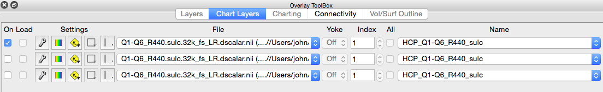

Chart Layers
The Chart Layers tab contain controls for the display of
charts. Some controls are enabled only for a specific chart
type (Histogram, Line-Series, or Matrix).
- On : Enables the layer for display as a chart.
- Load : Enables loading of line-series data from the file
selected in the overlay. This is a file property so if the
file is in more than one layer, the check boxes will have the
same status.
- Settings Wrench : Launches the Overlay and Map Settings
Dialog.
- Settings Color Bar: Displays a color bar in the graphics
window showing distribution of
- Settings Construction : Displays a menu for adding, moving,
and removing layers.
- Settings Matrix : Selects view of matrix to the full matrix,
full with no diagonal, or an lower/upper triangular view.
- Settings Vertical Axis : Selects location of the vertical axis
to the left or right.
- File : Selects file for the layer.
- Yoke : Sets map yoking between layers to a map yoking group
denoted by a Roman numeral. Navigation between maps of layers in
the same map yoking group will be yoked (move together). If
files with differing numbers of maps are set to the same map
yoking group, a warning will appear before yoking is activated.
- Index : Selects index of row or map.
- All : For histogram, allows one to display a histogram
containing data from all maps instead of the selected map.
- Name : Allows selection of the map by Name.
